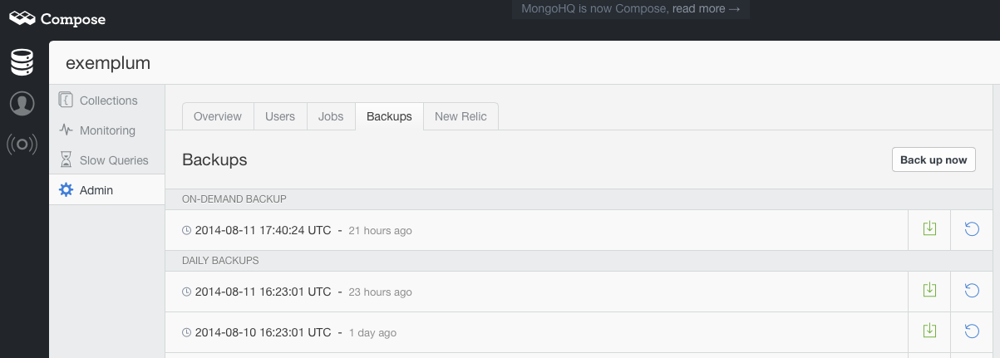
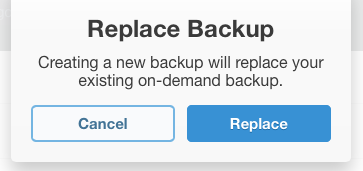
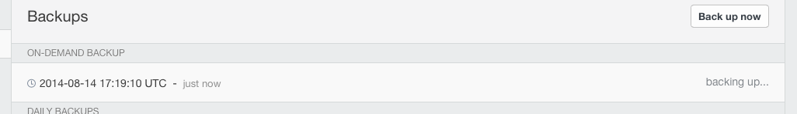

How to: Compose your Backups (Manually)
And what’s displayed in this view are all the backups available for this database. You may not have realised it, but there’ll already be the 7 daily, 4 weekly and 3 monthly backups that the Compose system retains, assuming of course you’ve had the database instance for three months.
The square-with-arrow icon on the right next to each backup allows you to download that backup. The circle-and-arrow icon allows you to restore that backup. Note that this doesn’t restore it to your current database. Instead, it restores it to a freshly created elastic deployment – this ensures that databases aren’t accidentally erased and that the restoration takes place to a database with a known good state.
 Anyway, at the top of this list if you have already run one, is the entry for the On-Demand backup. If you haven’t created one yet, the Backup Now button in the top right will start the process. If you have already created one, then, when you do press Backup Now you will be prompted to confirm you wish to replace your current On Demand backup. That’s because only one On Demand backup is retained at any time. Once you’ve confirmed, the backup will begin and will be indicated in the backup list like so:

When it’s done, the table will return to displaying the download and restore icons. Click the download to get your copy of the freshly made On Demand backup. What can you do with this file? Apart from the obvious “store it safely” with a MongoDB backup, you can use the files contained to seed a local MongoDB instance.
Those download and restore icons work for the daily, weekly and monthly backups too, so if you don’t want to wait for a fresh backup, you can always get a relatively up-to-date version from the most recent daily backup. On-demand backups are more useful when moving your data between deployments or seeding test systems but you do have to wait for them to be created. If only there was a way to automate that entire process… there is and we’ll look at it in the next installment.